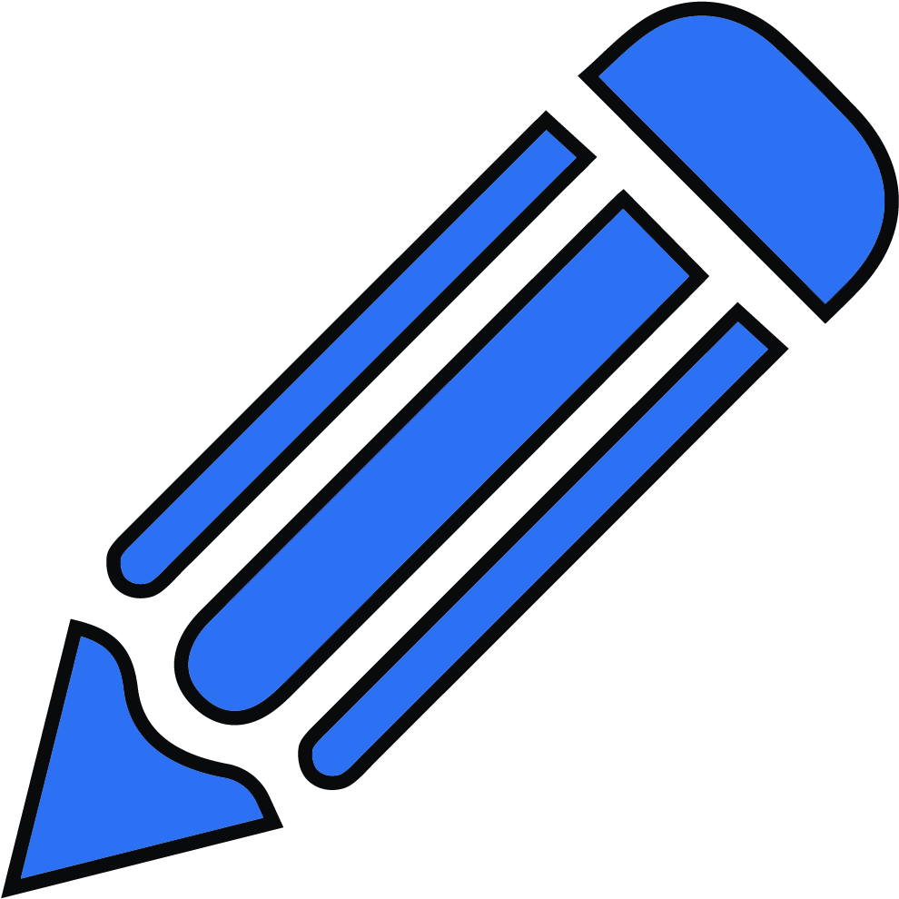

Thin
Line Extraction
Bezier
RDP Simplify
Resize:
Vectorize
Update
Final-Process
Show:
Original Raster Input
Vector Output (Raw)
Vector Output (Updated)
Vector Output (Final)
Keypoints
Suggested USM
USM
Grid
Recenter
Undo
Redo
Fixed Keypoint Radius
Keypoint Radius:
20
Keypoint Opacity:
0.5
Delete
Lasso
 Pencil
Erase
Line width:
1
Line color:
Suggested USM: